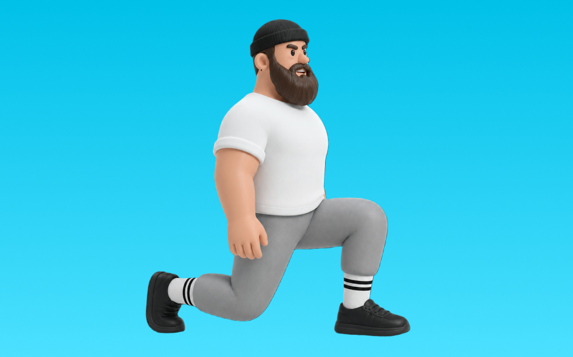

ウォーキングランジ

ウォーキングランジとは、ダンベルを使って「踏み出してしゃがむ」動作でお尻（臀筋）、脚（大腿四頭筋）を鍛える種目です。可動域が広く、左右のバランスを整えやすいのが特徴で、踏み出して沈み込み、前脚で押して戻す動作を繰り返します。下半身の筋力・筋量アップが期待できます。
- 対象部位
- 脚
- 器具
- ダンベル
- 記録形式
- 重量・回数
- 別名
- 歩行ランジ
YouTube動画
-
ランジの効果的なやり方｜目的別に3つのポイントを解説
-
【フォワードランジ】は踏み込み方を変えるだけで一気にすごいトレーニングになります
-
【トップトレーナーが教えるロジカル筋トレ】これが正解！「ランジ」の正しいやり方を徹底解説
-
お家で簡単トレーニング～進まないウォーキングランジ(強度★★★)
-
【ランジ筋トレ】体脂肪を減らすレッグランジトレーニング！ウォーキングやジョギングよりも効果あり！【10分】
-
【ウォーキングランジでお尻・太ももシェイプアップ！】ジョギング＆ランニングついでに5分トレーニング～トレーナーが実践するテクニック公開～
-
【ランニング ランジ トレーニング】ランニングに特化したランジトレーニング【埼玉県 和光市 ランニング トレーニング 整体 整体院祐】
-
ランジできてますか？股関節まわり、中臀筋が使えてないとこうなります。
-
【初心者向け】ポイントを理解し、ウォーキングランジの正しいやり方を学ぼう！！怪我をしない・痛めないやり方をアスレティックトレーナーが解説致します🍀
-
【DIGEST】筋トレで「壊れない」身体を手に入れろ／究極のスクワットフォームを伝授／「床を掴む」 トレーニングで意識革命／あなたの足が覚醒するランジ／コスパ最強「時短」身体論
-
お腹痩せするウォーキングランジの実践方法！これがダイエットを加速する！バックランジを合わせて！
-
【シェイプFit.】ウォーキングランジ&補足（レベルUP）bexise ベグサイズ
-
ランジの正しいやり方。下半身を鍛える筋トレ【脂肪燃焼ダイエット】
-
【一緒にできる】体脂肪を落とすバックランジ【カウント付き】
-
自宅ランジ筋トレ！ウォーキングよりも”下半身痩せ”に効果絶大のランジトレーニング【ヒップアップ/姿勢改善にも】
-
【足トレ】SHIN KODAMA直伝‟裏と表に効かせるウォーキングランジ”
-
【トレーニング】ウォーキングランジ by 芝本幸司
-
ダンベルランジの効果＆やり方！腰を痛めず、脚に効かせるコツ〜重さ・回数まで解説！
-
ヒップアップのためのウォーキングランジ【お尻】【脚痩せ】【宅トレ】
YouTubeショート
-
ランジの正しいフォーム#shorts
-
ランジの正しいやり方#shorts
-
ウォーキングランジ
-
足が速くなるスプリントトレーニング【ランジウォーク】 #陸上競技 #速く走るコツ #運動会 #かけっこ
-
【ウォーキング・ツイストランジ】SOSアスリートラボが厳選するジュニアアスリート向けトレーニング～なぜ、練習しても競技力が伸びないのか？を解決するトレーニング～
-
【筋肉つかない】自重トレ3種目 #自重トレーニング #筋トレ #フィットネス
-
50代からの筋トレはスクワットよりバックランジ！
-
【リールでバズった動画】ダンベルランジって知ってる？#shorts#リール#ジムあるある
-
ウォーキングランジ
-
脚を細くするスクワットはこれ！お尻ともも裏鍛えれば、前ももがスッキリするよ
-
今すぐ辞めて⚠️脚が太くなるブルガリアンスクワット
-
ウォーキングランジ（Walking Lunge）の基本フォームとやり方
-
全身回旋！？上半身と下半身を捻りまくる全身回旋ランジウォークとは
-
【脚が太くならないスクワットのやり方】 #脚痩せ #スクワット
-
太るスクワット・痩せるスクワット #squat
-
ウォーキングランジツイスト＆ウォーターバック
-
ウォーキングランジ
動作方法
- 足幅を決め、体幹を固める
- 股関節と膝を同時に曲げて下ろす
- 足裏全体で床を押して立ち上がる
動作ポイント
- 膝とつま先の向きをそろえる
- 胸を落としすぎない
- かかとを浮かせない
ワンポイントアドバイス
- ウォームアップで股関節と足首を動かす
- 高重量の日はセーフティ設定を確認する
目的別回数設定
目的や体力に応じた一般的な目安です。無理のない範囲で調整してください。
- 筋力アップ
- 1〜5回
- 筋肥大
- 6〜12回
- 持久力アップ
- 13〜20回
YouTube動画について
動画はYouTubeの公開情報をもとに表示しています。内容は投稿者によるもので、Biggrによる監修ではありません。
アプリを入手
筋トレやトレーニングの記録はBiggrにお任せください。今すぐ無料で使い始められます。